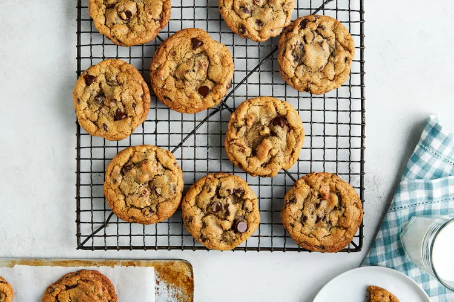

Brown Butter Chocolate Chip Cookies

Description
This chewy chocolate chip cookie recipe is made with browned butter and chunks
of chocolate for the perfect, crunchy on the outside, gooey in the middle cookie
of your dreams.
Ingredients
- 3/4 cup salted butter
- 1 cup packed light brown sugar
- 1/2 cup granulated sugar
- 2 large eggs
- 2 tsp vanilla extract
- 2 1/4 cups + 2 tbsp all-purpose flour
- 1 tsp baking soda
- 3/4 tsp table salt
- 12 oz semisweet chocolate chips
Steps
- Melt butter in a small heavy saucepan over medium, stirring constantly, until
butter begins to turn golden brown, 6 to 8 minutes. Immediately remove saucepan
from heat, and pour butter into a small heatproof bowl. Cover and chill until
butter is cool and begins to solidify, about 1 hour.
- Preheat oven to 350°F. Line 3 baking sheets with parchment paper.
- Beat browned butter, brown sugar, and granulated sugar in a stand mixer fitted
with a paddle attachment on medium speed until creamy, about 1 minute. Add eggs
and vanilla, beating until blended, about 30 seconds.
- Stir together flour, baking soda, and salt in a small bowl.
- Gradually add to browned butter mixture, beating on low speed, until just blended.
Beat in chocolate chips until just combined.
- Using a 2-tablespoon cookie scoop, scoop and drop cookies 2 inches apart on
prepared baking sheets.
- Bake cookies in preheated oven in batches, 1 baking sheet at a time, until
cookies are golden and set around the edges, 11 to 13 minutes per batch.
Transfer cookies to wire racks; let cool completely, about 15 minutes.